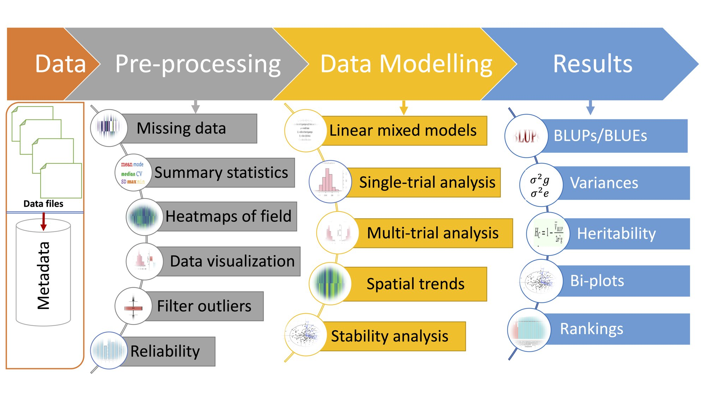
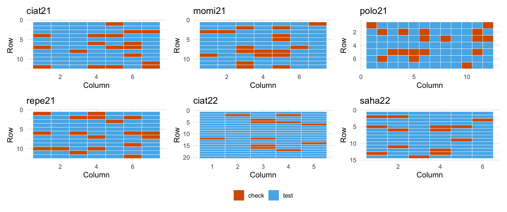
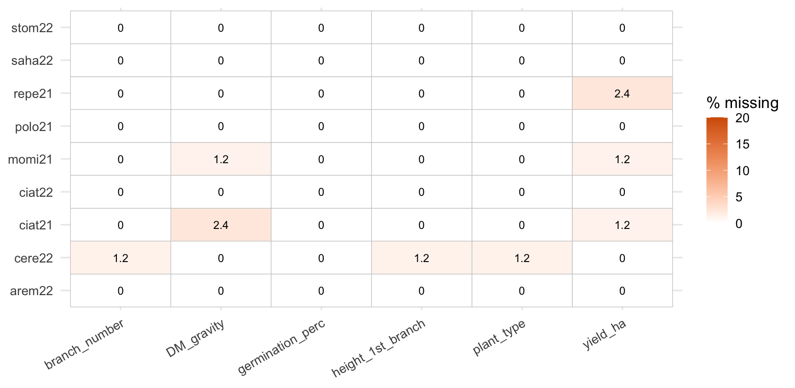
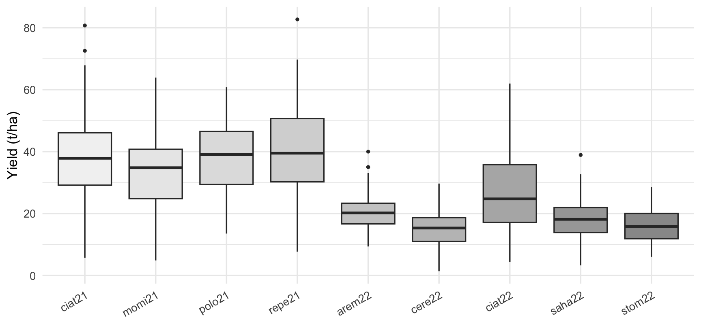
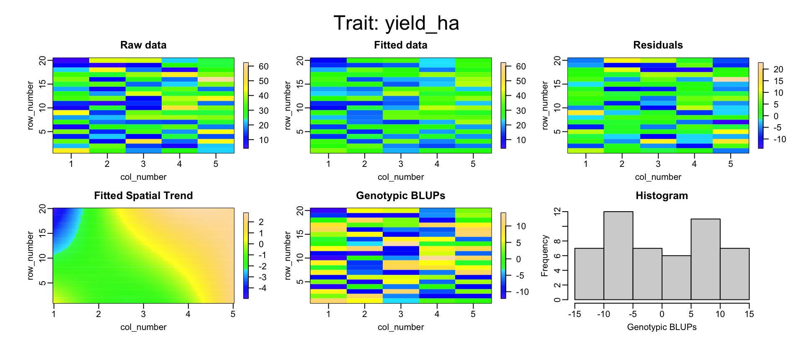
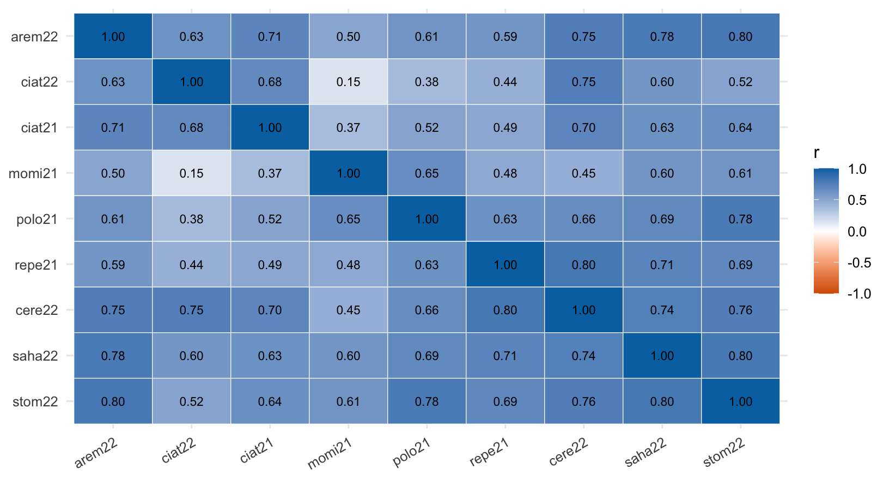
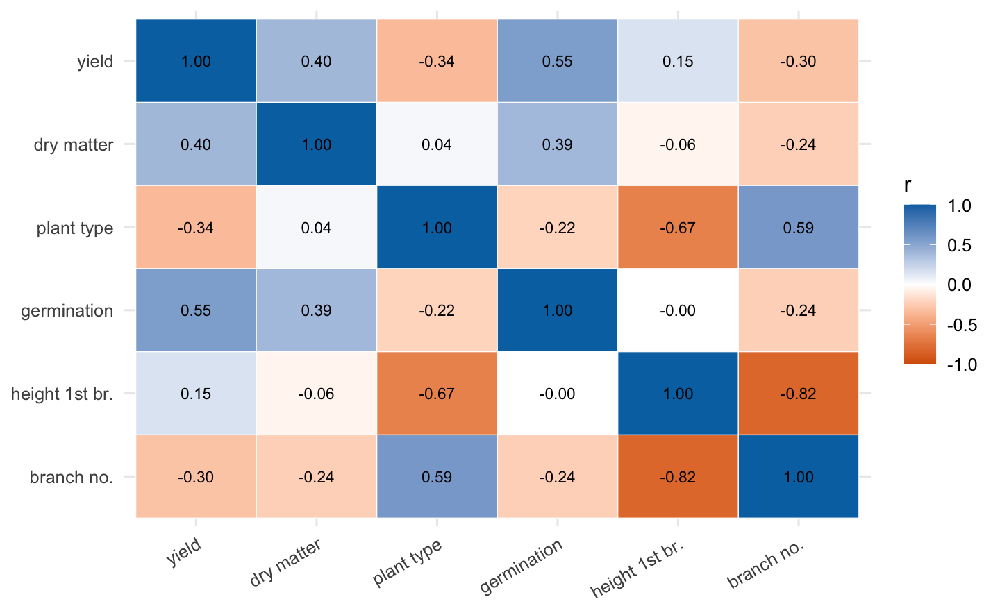

source("exercises/Pipeline_cassava_support/helpers.R")
plot_flow()
Author: Luis Fernando Delgado Muñoz
Session: Day 6, Monday 16 November (after the machine learning session)
.Rproj, and run 00_install_packages.R first.The course focus is mutation breeding. In this chapter we show the regular pipeline of a breeding programme, with real cassava data. The same steps apply to a mutant population. Every figure is made with free R packages, so you can repeat it.
A breeding programme runs many trials, in many places, with many traits. At the end the breeder must decide which clones go to the next stage. A pipeline is a fixed sequence of steps, written as code, that gives the same answer every time.

Our steps in this chapter are:
The data are collected with a field book app, stored in a database in the cloud (Cassava Base in this example), and downloaded as one table. Then the analysis starts.
source("exercises/Pipeline_cassava_support/helpers.R")
plot_flow()
The data come from nine cassava trials in the Caribbean coast of Colombia, in 2021 and 2022, with 51 clones. Each trial is a row-column design with checks (released varieties) spread at random. The traits are yield (t/ha), dry matter, plant type (score 1 to 5), germination, height of the first branch and branch number. The data are public in Cassava Base, and the original code is in the repository Cassava2050/2022DVGXE9env.
source("exercises/Pipeline_cassava_support/helpers.R")
library(patchwork)
d <- load_cassava("data/cassava_DVGXE_tidy.csv")
dim(d)[1] 762 65table(d$trial, d$check_test)
check test
ciat21 18 66
momi21 18 66
polo21 18 66
repe21 18 66
arem22 14 64
cere22 12 68
ciat22 12 88
saha22 14 70
stom22 12 72First look at the field design. Orange tiles are checks, blue tiles are test clones.
plot_layout_grid(d, c("ciat21", "momi21", "polo21", "repe21", "ciat22", "saha22"))
Then missing data. A common rule is to drop a trait or trial with more than 20% missing values. Here almost everything is complete.
plot_missing(d)
Trials can only be compared if they share clones (or checks).
plot_connect(d)
Last, look at the variation between trials. The trials differ a lot in the mean. This is the environment effect. We want the clone effect, not the place effect.
plot_trait_trial(d, "yield_ha")
Neighbour plots are often more alike than distant plots (soil, water, light). If we ignore this, the trend goes into the error and the clone ranking gets noisy. The package SpATS fits clone as random plus a smooth two-dimensional surface over rows and columns. It gives a BLUP per clone and a heritability per trial.
m1 <- fit_spats(d, "ciat22", "yield_ha")
plot(m1, cex = 0.7)
getHeritability(m1) g
0.7 We repeat this for every trial and every trait in a loop.
H2 <- single_h2(d)
H2$trial <- factor(H2$trial, levels = levels(d$trial))
H2$trait <- factor(H2$trait, levels = TRAITS)
ggplot(H2, aes(trait, trial, fill = h2)) + geom_tile(colour = "white") +
geom_text(aes(label = sprintf("%.2f", h2)), size = 3.2) +
scale_fill_gradient(low = "#F3E5D8", high = "#0072B2", limits = c(0, 1), name = "H2") +
labs(x = NULL, y = NULL) + theme_minimal(base_size = 13) +
theme(axis.text.x = element_text(angle = 30, hjust = 1))
Most values are moderate to high. A trait with a very low value in a trial (germination in stom22) is not reliable there, and it should not go to the multi-environment analysis.
The model is: yield of a plot = trial mean + clone effect + clone by trial effect + error. In lme4 we write yield ~ trial + (1 | clone) + (1 | clone:trial).
met <- lapply(c("yield_ha", "DM_gravity", "plant_type"), function(tr) {
m <- met_model(d, tr); v <- met_h2(m, d, tr)
data.frame(trait = TRAIT_LABELS[[tr]], clone = v[["Vg"]], clone_x_trial = v[["VgxE"]],
residual = v[["Ve"]], H2 = v[["h2"]])
})
knitr::kable(do.call(rbind, met), digits = 2, row.names = FALSE,
col.names = c("Trait", "Clone variance", "Clone by trial variance", "Residual variance", "Heritability, all trials"))| Trait | Clone variance | Clone by trial variance | Residual variance | Heritability, all trials |
|---|---|---|---|---|
| Yield (t/ha) | 17.53 | 27.39 | 66.12 | 0.70 |
| Dry matter (%) | 9.09 | 1.72 | 3.06 | 0.96 |
| Plant type (1 to 5) | 0.18 | 0.16 | 0.32 | 0.82 |
When the clone by trial variance is large, the best clone changes from place to place. The genotypic correlation between trials shows where this happens. Values near 1 mean the ranking is similar.
mY <- met_model(d, "yield_ha")
plot_corr(trial_gcor(mY))
The correlation between traits (clone BLUPs across all trials) shows which traits move together.
B <- all_blups(d)
Rt <- cor(B[, TRAITS])
colnames(Rt) <- rownames(Rt) <- c("yield", "dry matter", "plant type", "germination", "height 1st br.", "branch no.")
plot_corr(Rt)
We use yield, dry matter and plant type. Each BLUP is standardised and multiplied by a score chosen by the breeder: yield +10, dry matter +10, plant type -5 (a low plant type score is better). We keep the top 20%.
S <- selection_table(B)
top <- head(S, 11)
knitr::kable(data.frame(Rank = top$rank, Clone = top$g, Yield = round(top$yield_ha, 1),
`Dry matter` = round(top$DM_gravity, 1), `Plant type` = round(top$plant_type, 2),
Index = round(top$index, 1), Advance = ifelse(top$selected, "yes", "no"),
check.names = FALSE), row.names = FALSE)| Rank | Clone | Yield | Dry matter | Plant type | Index | Advance |
|---|---|---|---|---|---|---|
| 1 | SM3464-29 | 8.4 | 0.6 | -0.13 | 29.7 | yes |
| 2 | SM3640-20 | 6.1 | 2.5 | 0.10 | 26.0 | yes |
| 3 | SM2775-4_is_Bellotti | 1.8 | 3.4 | -0.39 | 22.8 | yes |
| 4 | SM3559-11 | 3.4 | 4.3 | 0.20 | 22.7 | yes |
| 5 | SMB2446-2_is_Caiseli | 0.7 | 2.6 | -0.66 | 20.3 | yes |
| 6 | SM1759-29 | 1.3 | 3.0 | -0.42 | 20.3 | yes |
| 7 | CM9456-12 | 4.4 | 1.4 | -0.16 | 20.3 | yes |
| 8 | SGB765-4_is_Rojita | 2.4 | 1.8 | -0.31 | 17.9 | yes |
| 9 | SM3106-14 | 2.9 | 1.7 | -0.05 | 15.8 | yes |
| 10 | CM4919-1_is_Veronica | 2.3 | 0.2 | -0.53 | 15.1 | yes |
| 11 | SM3641-2 | -0.7 | 4.5 | -0.09 | 14.6 | yes |
The scores are a decision of the breeder, not a statistical result. The statistics gives fair numbers to combine. Clones with “is” in the name are released varieties used as checks.
Disease scores and similar traits are binary or ordinal. A model for categories can be better than a normal model.
library(glmmTMB)
# glmmTMB(disease ~ rep + (1 | geno), family = binomial, data = trial)
library(ordinal)
# clmm(score ~ rep + (1 | geno), data = trial)Hussain et al. (2022) published an open pipeline with R Markdown files (quality check and lme4) and demo data. Their repository is github.com/whussain2/Analysis-pipeline. A copy is in the support folder, in reference/Hussain_Analysis-pipeline/. Use it to compare with the code of this chapter.
To make your own analysis repeatable, use an RStudio project, write the steps in a Quarto or R Markdown file, keep the data and the code together, and use Git and GitHub for versions.
Open Pipeline_cassava_support.Rmd from the support folder.
DM_gravity in trial momi21. What is its heritability?plot_trait_trial(d, "DM_gravity")
m2 <- fit_spats(d, "momi21", "DM_gravity")
getHeritability(m2)
S2 <- selection_table(B, weights = c(yield_ha = 10, DM_gravity = 20, plant_type = -5))
sum(head(S2$g, 11) %in% head(S$g, 11)) # clones in both lists